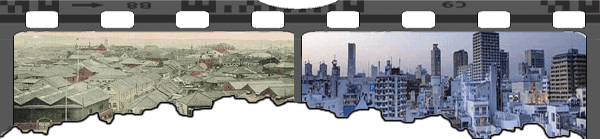

О чем ресурс?
Сайт посвещен измениям жизненных ситуаций и людей в них. Это сайт сравнений происходящих событий. Это сайт о том как было До и как стало После.
Что такое ДиП?
Все познается в стравнении. И события не исключение. ДиП - это сокращение от "до и после". Так мы называем объедененное фото, отображающее в рамках кино летны.

Для кого этот сайт?
Этот сайт - для тебя. Если тебе есть что показать и ты хочешь этим поделится с другими - добро пожаловать в нашу дружную семью.
Как связатся с разработчиками?
Мы активно разваваем ресурс и хотим, что бы он был максимально удобным. Если у тебя есть пожелания по улучшению сайта - пиши сюда в раздел комментарии. На данный момент мы делаем удобный ДиП редактор. Что бы все желающие могли добавлять свои ДиП-ы на сайт.
Наш девиз
Нам есть что вспомнить!


Комментарии пользователей."